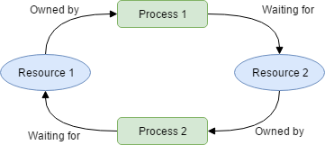

2
2Week 4: Heaps, Stacks, Hash Maps
DSAN 5500: Data Structures, Objects, and Algorithms in Python
Jeff Jacobs
Monday, February 5, 2024
HW1 Postmortem
THANK YOU!!!
- Thank you all SO so much for your patience
- I know it doesn’t help present-day you to hear this, but
- Future you will have less stress now that I have a big server log containing all of the issues with the grading server, which I’ll use to fix the server for HW2 onwards!
The Devil is in the Details

From PR Week, 19 Oct 2015
Objects vs. Their (String) Representations


In Art

René Magritte, The Treachery of Images (1929)
In Python
- So far so good…
- The value assigned to
xis anintint\(\implies\) thing you can do arithmetic addition with
- The value assigned to
yis astrstr\(\implies\) thing you cannot do arithmetic addition with- (Though we can overload the
+operator to represent concatenation when applied to twostrobjects)
In HW1
Objects vs. Their Representations
\[ \begin{align*} \overbrace{\boxed{\texttt{int}\text{ object}}}^{\text{addition defined}} &\neq \overbrace{\boxed{\texttt{str}\text{ representation of }\texttt{int}\text{ object}}}^{\text{addition not defined}} \\ \underbrace{\boxed{\texttt{SwimStyle}\text{ object}}}_{\texttt{.name}\text{ defined}} &\neq \underbrace{\boxed{\texttt{str}\text{ representation of }\texttt{SwimStyle}\text{ object}}}_{\texttt{.name}\text{ not defined}} \end{align*} \]
Other Possible Representations!
strs are just lists of characters…
\(\leadsto\) 2. Characters are stored in Python memory as int values (ASCII encodings)…
\(\leadsto\) 3. Each int value is stored in computer memory as a byte (8 bits \(b_i \in \{0, 1\}\)):
['1000011', '1100101', '1100011', '1101001', '100000', '1101110', '100111', '1100101', '1110011', '1110100', '100000', '1110000', '1100001', '1110011', '100000', '1110101', '1101110', '1100101', '100000', '1110011', '1110100', '1110010', '1101001', '1101110', '1100111']So What is the “Right” Representation?
- No single “best” choice!
- Different choices more/less helpful for different goals (think of
datetime.datetimeexample) - That’s exactly why Python has two different “default” ways to generate representations:
__str__()and__repr__() - Different “pictures” of an object (from different angles) may reveal some properties while hiding others
- What is the “right” photo of this statue? →
Different Representations, Different Information About the Object

Parallel Computing Preview


Why Is This A Big Deal?
- You’ve been tasked with writing bank software
- \(A\) has $500, \(B\) has $500, \(A\) fills out form to send $300 to \(B\) but clicks “Submit” twice…
From Baeldung on Computer Science, What is a Race Condition?
And on the Autograder Server…

Swim Club with Data Science Hats
Fastest Per Style
- This works well for you, as a data scientist, manually analyzing the data via code cells
- What if the public is accessing your data hundreds of times per second (e.g., for a live-updating data dashboard)? Should we (1) filter, (2) sort, (3) group by style, (4) filter (choose top entry), (5) drop column every time data is accessed?
- (Every DSAN student can do this with Pandas‚Ķ YOU will know how to do it with exponentially-greater efficiency, and mathematically prove it üòé)
Onwards and Upwards: Fancier Algorithms
LinkedList: Foundation for Most(?) Data Structures!


So Then… Why Is This a Whole DSAN Class?
- The core structures are identical, but we can optimize different goals (efficient insertion, sorting, retrieval, deletion, …) by changing the invariants maintained by the algorithms internal to our structure
- Crucial Insertion-Sort invariant: \(\textsf{Sorted}(1,i)\) true when we go to process entry \(i + 1\) (
key) - Crucial HW1 invariant: \(\textsf{Up-To-Date-Favorite}(1,i-1)\) true when we go to process entry \(i + 1\) (next result in dataset)
- \(\implies\) Efficiency of obtaining favorite style guaranteed to be constant-time, \(O(1)\)!
- Otherwise, would be \(O(n) > O(1)\) (linear approach) or at best \(O(\log_2(n)) > O(1)\) (divide-and-conquer)
Hash Tables
- *(Spoiler alert, so you know I’m not lying to you: this is a LinkedList with some additional structure!)
- You just got hired as a cashier (Safeway cashiering alum myself ü´°)
- The scanner is broken (spoiler #2: the scanner uses a hash table), so you start writing down items along with their prices, one-by-one, as items come in…
Our List of (Item, Price) Pairs
Code
[('Banana', 10), ('Apple', 2), ('Four Loko', 5)]- As the list gets longer, it gets harder and harder to find where you wrote down a specific item and its price
- As you now know, you could use linear search, \(O(n)\), or if you ensure alphabetical order (an invariant!), you could use binary, divide-and-conquer search, \(O(\log_2(n))\)
- We can do even better: \(O(1)\). First w/magic, but then math
Strange-At-First Technique for Algorithm Analysis: Oracles
- What if we had a magical wizard who could just tell us where to find an item we were looking for?
- Sounds like I’m joking or saying “what if we had a billion $ and infinite rizz and we could fly and walk through walls”
- And yet, through the magic of math and computer science, there are concrete hashing algorithms which ensure (in a mathematically-provable way!) “almost certain” \(O(1)\) lookup time
Mathematical Strategy of Oracles
- We’ll use a concrete, simplified hash function to illustrate
- Mathematically we’ll be able to get something like
\[ T(n) = O(1 + \underbrace{\epsilon}_{\mathclap{\text{Collision rate}}} \cdot n) \]
- Which tells us: if we had an oracle who could ensure near-0 collision rates, then \(T(n) = O(1)\).
- And, by a beautiful division-of-labor, other computer scientists figure out the near-0 collision rates part, giving us
\[ p^{✅} = [T(n) = O(1 + \epsilon n)], q^{✅} = [\epsilon \approx 0],\text{ so } p \wedge q \implies T(n) \overset{✅}{=} O(1). \]
Back to the Price List
- Our hash function:
hash(item)= first letter ofitem
\[ h(\texttt{x}) = \texttt{x[0]} \]
h('Banana') = 'B',h('Monkey') = 'M'- With this function in hand, we can create a length-26 array, one slot for each letter in alphabet, and then write down (item, price) pairs in whatever slot
itemhashes to
The Importance of Differentiating Operations: Insertion vs. Lookup
- So far, we have \(O(1)\) insertion via hashing
- We also get \(O(1)\) lookup!
- When customer hands us an item (say,
'Banana'), we compute the hash (B), look in that slot, and obtain the price for bananas. - We also get \(O(1)\) updating (hash to find the old price, update it to have new price) and \(O(1)\) deletion (hash to find the slot containing the item, then erase it from that slot)
So What’s the Catch???
- BLUEBERRIES show up to ruin our day (as usual üòû)
- We hash, so far so good:
h('Blueberries') = 'B' - But then we go to the
Bslot and see that(Bananas, 10)is already there!!! Wtf do we do here… don’t panic! - The answer? We open our HW1 from DSAN 5500 and remember that we have our lovely friend the
LinkedListthat we can use whenever and however we want!
Arrays vs. Linked Lists
- Jeff is hiding something here… Why jump to
LinkedList? Why not just… another length-26 array, for example? - For this we open up our Week 1 slides and remember the stack vs. heap distinction: we know how many letters in the alphabet, we don’t know how many items starting with
B(or, if we do, we want to be able to expand/contract our price list to handle new/discontinued items) - Terminology for this kind of “hybrid” data structure:
HashTableis anArraythat “degenerates into” aLinkedList(when there are collisions)
Look How Far We Came!
- Beginning of class: Only structure we knew allowing insertion (
LinkedList) was \(O(n)\) for everythihg - End of class: New structure where suddenly everything is \(O(1)\), except in “unlucky” cases, in which it partially “degenerates” into a
LinkedList - \(\implies\) The “inevitable” \(O(n)\) runtime has transformed into the unlucky worst-case upper bound
- \(\implies\) By taking core data structures/algorithms from your toolkit, you can “piece together” hybrid structures whose whole (runtime) is better than the sum of its parts
Taking This Idea and Running With It
- Next week we’ll look at
BinarySearchTree(BST) - Since it’s just a glorified
LinkedList, we’ll be able to take ourHashMapfrom today and “drop in” theBSTto play the role theLinkedListis playing right now - i.e., when there’s a collision, we’ll create a
BSTwith its \(O(\log(n))\) operations, rather than aLinkedListwith its \(O(n)\) operations - \(\implies\)
HashMapwill go from [\(O(1)\) best-case / \(O(n)\) worst-case] to [\(O(1)\) best-case / \(O(\log_2(n))\) worst-case]! Stay tuned…
References
DSAN 5500 Week 4: Heaps, Stacks, Hash Maps